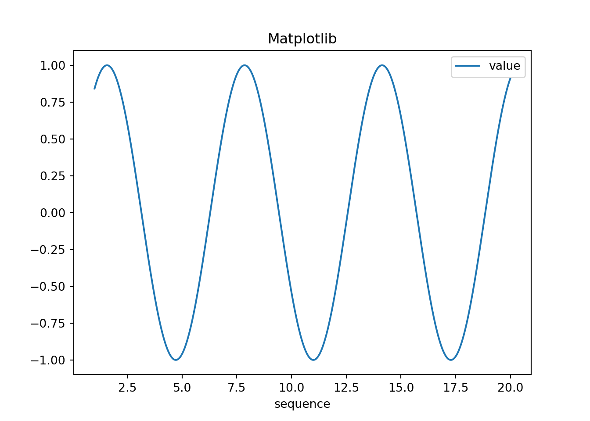

Python Setup in RStudio using the reticulate
package
Posted on June 15, 2022
This post is a summary of my initial exploration to set up Python to
operate within RStudio. I was mostly interested in being able to apply
machine learning algorithms from Sci-kit Learn but through the RStudio
IDE. The possibility of switching between R and Python languages within
an analysis was also intriguing to me. I was somewhat surprised that
there doesn’t seem to be a consensus on how to set up Python with
RStudio. I found many different recommendations as far as how to install
Python and how to configure RStudio. I believe this lack of consensus is
due to the feature being rather new and also there are many possible
configurations depending on your usage and preferences.
I started with a fresh installation of Python and I chose to use the
Miniconda installer for Windows 64-bit. No problems here except the
default installation directory contained my Windows user name which
contained a space. The installer gave a warning and I instead chose to
install in folder in root directory called miniconda. I then updated to
the latest version of RStudio (2022.02.2) and installation of the
reticulate package. The reticulate package is
essential for using Python in the RStudio environment.
library(tidyverse)
library(reticulate)
From here, I tried the setup recommended by Tiffany Timbers on her Github and
further discussed in an R Ladies Baltimore video. This setup involved
setting a system environment variable in the .Rprofile to specify which
Python installation to use:
Sys.setenv(RETICULATE_PYTHON = "path_to_miniconda's_python").
While this approach does in fact work, this system setting locks in the
Python installation to use and you need to modify the .Rprofile in order
to use a different conda python environment. The setup also mentioned to
make configuration changes to Git Bash and RStudio terminal settings
that I found were not necessary. The setup instructions were created in
December 2020 so, perhaps, subsequent RStudio versions have made these
terminal configurations obsolete.
Next, I found the reticulate installation recommended by
Matt Dancho on the Business
Science website. This setup recommended setting up a conda
environment using the following command:
conda create -n py3.8 python=3.8 scikit-learn pandas numpy matplotlib.
This command creates a new environment “py3.8”, installs Python 3.8 and
installs the latest versions of scikit-learn,
pandas, numpy and matplotlib.
List the conda environments in RMarkdown
conda_list()
## name python
## 1 base C:\\miniconda/python.exe
## 2 py3.8 C:\\miniconda\\envs\\py3.8/python.exe
You can then set your conda environment using
reticulate::use_condaenv.
use_condaenv("py3.8", required = TRUE)
The conda environment used by reticulate can then be checked.
py_config()
## python: C:/miniconda/envs/py3.8/python.exe
## libpython: C:/miniconda/envs/py3.8/python38.dll
## pythonhome: C:/miniconda/envs/py3.8
## version: 3.8.13 | packaged by conda-forge | (default, Mar 25 2022, 05:59:45) [MSC v.1929 64 bit (AMD64)]
## Architecture: 64bit
## numpy: C:/miniconda/envs/py3.8/Lib/site-packages/numpy
## numpy_version: 1.22.4
##
## NOTE: Python version was forced by RETICULATE_PYTHON
The following tests are directly from the Matt Dancho Business
Science website.
Test 1: Is Python Working?
1 + 1
## 2
Note that here we are using a Python code block in Rmarkdown.
Test 2: Numpy and Pandas
import numpy as np
import pandas as pd
Use numpy to create a sequence of numbers in an array
np.arange(1,10)
## array([1, 2, 3, 4, 5, 6, 7, 8, 9])
Use pandas to create a dataframe
# Make a sequence in a data frame using dict format
df = pd.DataFrame(data = {"sequence":np.arange(1,20,.01)})
# Use assign (mutate) equivalent to calculate the np.sin() of the series
df = df.assign(value=np.sin(df["sequence"]))
df
## sequence value
## 0 1.00 0.841471
## 1 1.01 0.846832
## 2 1.02 0.852108
## 3 1.03 0.857299
## 4 1.04 0.862404
## ... ... ...
## 1895 19.95 0.891409
## 1896 19.96 0.895896
## 1897 19.97 0.900294
## 1898 19.98 0.904602
## 1899 19.99 0.908819
##
## [1900 rows x 2 columns]
Test #3: Generate a plot using Matplotlib
import matplotlib as plt
df.plot(x="sequence", y = "value", title = "Matplotlib")

Test #4: Build a model using Sci-kit Learn
from sklearn.ensemble import RandomForestClassifier
clf = RandomForestClassifier(random_state=0)
X = [[ 1, 2, 3], # 2 samples, 3 features
[11, 12, 13]]
y = [0, 1] # classes of each sample
clf.fit(X, y)
RandomForestClassifier(random_state=0)
In a Jupyter environment, please rerun this cell to show the HTML representation or trust the notebook.
On GitHub, the HTML representation is unable to render, please try loading this page with nbviewer.org.clf.predict(X) # predict classes of the training data
## array([0, 1])
Tip from Business Science post - 4 Conda Terminal Commands
At some point you will need to create, modify, add more packages to
your Conda Environment(s). Here are 4 useful commands:
- Run
conda env list to list the available conda
environments
- Run
conda activate <env_name> to activate a conda
environment
- Run
conda update --all to update all python packages in
a conda environment.
- Run
conda install <package_name> to install a new
package
Summary
I found the approach recommended in the post by Matt Dancho was more
straightforward and I haven’t found any downside yet. I like the
flexibilty to change the conda environment for each analysis (Rmarkdown
file) rather than adjusting the .Rprofile setting and rebooting R each
time for the change to take effect. I will continue to update this post
as I learn more tips and tricks for mixing R and Python code in
Rmarkdown using the RStudio IDE.
LS0tDQpvdXRwdXQ6IA0KICBodG1sX2RvY3VtZW50Og0KICAgIGNvZGVfZG93bmxvYWQ6IHRydWUNCiAgICBpbmNsdWRlczoNCiAgICAgIGFmdGVyX2JvZHk6IGZvb3Rlci5odG1sDQotLS0NCg0KPGJyPg0KDQpgYGB7ciBzZXR1cCwgaW5jbHVkZT1GQUxTRX0NCmtuaXRyOjpvcHRzX2NodW5rJHNldChlY2hvID0gVFJVRSkNCg0KYGBgDQoNCiMjICoqUHl0aG9uIFNldHVwIGluIFJTdHVkaW8gdXNpbmcgdGhlIHJldGljdWxhdGUgcGFja2FnZSoqDQoNCipQb3N0ZWQgb24gSnVuZSAxNSwgMjAyMioNCg0KVGhpcyBwb3N0IGlzIGEgc3VtbWFyeSBvZiBteSBpbml0aWFsIGV4cGxvcmF0aW9uIHRvIHNldCB1cCBQeXRob24gdG8gb3BlcmF0ZSB3aXRoaW4gUlN0dWRpby4gIEkgd2FzIG1vc3RseSBpbnRlcmVzdGVkIGluIGJlaW5nIGFibGUgdG8gYXBwbHkgbWFjaGluZSBsZWFybmluZyBhbGdvcml0aG1zIGZyb20gU2NpLWtpdCBMZWFybiBidXQgdGhyb3VnaCB0aGUgUlN0dWRpbyBJREUuICBUaGUgcG9zc2liaWxpdHkgb2Ygc3dpdGNoaW5nIGJldHdlZW4gUiBhbmQgUHl0aG9uIGxhbmd1YWdlcyB3aXRoaW4gYW4gYW5hbHlzaXMgd2FzIGFsc28gaW50cmlndWluZyB0byBtZS4gIEkgd2FzIHNvbWV3aGF0IHN1cnByaXNlZCB0aGF0IHRoZXJlIGRvZXNuJ3Qgc2VlbSB0byBiZSBhIGNvbnNlbnN1cyBvbiBob3cgdG8gc2V0IHVwIFB5dGhvbiB3aXRoIFJTdHVkaW8uICBJIGZvdW5kIG1hbnkgZGlmZmVyZW50IHJlY29tbWVuZGF0aW9ucyBhcyBmYXIgYXMgaG93IHRvIGluc3RhbGwgUHl0aG9uIGFuZCBob3cgdG8gY29uZmlndXJlIFJTdHVkaW8uICBJIGJlbGlldmUgdGhpcyBsYWNrIG9mIGNvbnNlbnN1cyBpcyBkdWUgdG8gdGhlIGZlYXR1cmUgYmVpbmcgcmF0aGVyIG5ldyBhbmQgYWxzbyB0aGVyZSBhcmUgbWFueSBwb3NzaWJsZSBjb25maWd1cmF0aW9ucyBkZXBlbmRpbmcgb24geW91ciB1c2FnZSBhbmQgcHJlZmVyZW5jZXMuDQoNCkkgc3RhcnRlZCB3aXRoIGEgZnJlc2ggaW5zdGFsbGF0aW9uIG9mIFB5dGhvbiBhbmQgSSBjaG9zZSB0byB1c2UgdGhlIE1pbmljb25kYSBpbnN0YWxsZXIgZm9yIFdpbmRvd3MgNjQtYml0LiAgTm8gcHJvYmxlbXMgaGVyZSBleGNlcHQgdGhlIGRlZmF1bHQgaW5zdGFsbGF0aW9uIGRpcmVjdG9yeSBjb250YWluZWQgbXkgV2luZG93cyB1c2VyIG5hbWUgd2hpY2ggY29udGFpbmVkIGEgc3BhY2UuICBUaGUgaW5zdGFsbGVyIGdhdmUgYSB3YXJuaW5nIGFuZCBJIGluc3RlYWQgY2hvc2UgdG8gaW5zdGFsbCBpbiBmb2xkZXIgaW4gcm9vdCBkaXJlY3RvcnkgY2FsbGVkIG1pbmljb25kYS4gIEkgdGhlbiB1cGRhdGVkIHRvIHRoZSBsYXRlc3QgdmVyc2lvbiBvZiBSU3R1ZGlvICgyMDIyLjAyLjIpIGFuZCBpbnN0YWxsYXRpb24gb2YgdGhlIGBgYHJldGljdWxhdGVgYGAgcGFja2FnZS4gVGhlIGBgYHJldGljdWxhdGVgYGAgcGFja2FnZSBpcyBlc3NlbnRpYWwgZm9yIHVzaW5nIFB5dGhvbiBpbiB0aGUgUlN0dWRpbyBlbnZpcm9ubWVudC4NCg0KYGBge3IgbG9hZF9saWJzLCBtZXNzYWdlPUZBTFNFfQ0KbGlicmFyeSh0aWR5dmVyc2UpDQpsaWJyYXJ5KHJldGljdWxhdGUpDQpgYGANCg0KDQpGcm9tIGhlcmUsIEkgdHJpZWQgdGhlIHNldHVwIHJlY29tbWVuZGVkIGJ5IFRpZmZhbnkgVGltYmVycyBvbiBoZXIgW0dpdGh1Yl0oaHR0cHM6Ly9naXRodWIuY29tL3R0aW1iZXJzL2ludHJvLXRvLXJldGljdWxhdGUpIGFuZCBmdXJ0aGVyIGRpc2N1c3NlZCBpbiBhbiBSIExhZGllcyBCYWx0aW1vcmUgW3ZpZGVvXShodHRwczovL3lvdXR1LmJlL1UzQnlHaDhSbVNjKS4gIFRoaXMgc2V0dXAgaW52b2x2ZWQgc2V0dGluZyBhIHN5c3RlbSBlbnZpcm9ubWVudCB2YXJpYWJsZSBpbiB0aGUgLlJwcm9maWxlIHRvIHNwZWNpZnkgd2hpY2ggUHl0aG9uIGluc3RhbGxhdGlvbiB0byB1c2U6IGBgYFN5cy5zZXRlbnYoUkVUSUNVTEFURV9QWVRIT04gPSAicGF0aF90b19taW5pY29uZGEnc19weXRob24iKWBgYC4gIFdoaWxlIHRoaXMgYXBwcm9hY2ggZG9lcyBpbiBmYWN0IHdvcmssIHRoaXMgc3lzdGVtIHNldHRpbmcgbG9ja3MgaW4gdGhlIFB5dGhvbiBpbnN0YWxsYXRpb24gdG8gdXNlIGFuZCB5b3UgbmVlZCB0byBtb2RpZnkgdGhlIC5ScHJvZmlsZSBpbiBvcmRlciB0byB1c2UgYSBkaWZmZXJlbnQgY29uZGEgcHl0aG9uIGVudmlyb25tZW50LiAgVGhlIHNldHVwIGFsc28gbWVudGlvbmVkIHRvIG1ha2UgY29uZmlndXJhdGlvbiBjaGFuZ2VzIHRvIEdpdCBCYXNoIGFuZCBSU3R1ZGlvIHRlcm1pbmFsIHNldHRpbmdzIHRoYXQgSSBmb3VuZCB3ZXJlIG5vdCBuZWNlc3NhcnkuICBUaGUgc2V0dXAgaW5zdHJ1Y3Rpb25zIHdlcmUgY3JlYXRlZCBpbiBEZWNlbWJlciAyMDIwIHNvLCBwZXJoYXBzLCBzdWJzZXF1ZW50IFJTdHVkaW8gdmVyc2lvbnMgaGF2ZSBtYWRlIHRoZXNlIHRlcm1pbmFsIGNvbmZpZ3VyYXRpb25zIG9ic29sZXRlLg0KDQpOZXh0LCBJIGZvdW5kIHRoZSBgYGByZXRpY3VsYXRlYGBgIGluc3RhbGxhdGlvbiByZWNvbW1lbmRlZCBieSBNYXR0IERhbmNobyBvbiB0aGUgW0J1c2luZXNzIFNjaWVuY2VdKGh0dHBzOi8vd3d3LmJ1c2luZXNzLXNjaWVuY2UuaW8vbGVhcm4tci8yMDIwLzA0LzIwL3NldHVwLXB5dGhvbi1pbi1yLXdpdGgtcm1hcmtkb3duLmh0bWwpIHdlYnNpdGUuICBUaGlzIHNldHVwIHJlY29tbWVuZGVkIHNldHRpbmcgdXAgYSBjb25kYSBlbnZpcm9ubWVudCB1c2luZyB0aGUgZm9sbG93aW5nIGNvbW1hbmQ6IGBgYGNvbmRhIGNyZWF0ZSAtbiBweTMuOCBweXRob249My44IHNjaWtpdC1sZWFybiBwYW5kYXMgbnVtcHkgbWF0cGxvdGxpYmBgYC4gIFRoaXMgY29tbWFuZCBjcmVhdGVzIGEgbmV3IGVudmlyb25tZW50ICJweTMuOCIsIGluc3RhbGxzIFB5dGhvbiAzLjggYW5kIGluc3RhbGxzIHRoZSBsYXRlc3QgdmVyc2lvbnMgb2YgYGBgc2Npa2l0LWxlYXJuYGBgLCBgYGBwYW5kYXNgYGAsIGBgYG51bXB5YGBgIGFuZCBgYGBtYXRwbG90bGliYGBgLg0KDQojIyMgTGlzdCB0aGUgY29uZGEgZW52aXJvbm1lbnRzIGluIFJNYXJrZG93bg0KYGBge3IgbGlzdF9weXRob25fZW52fQ0KY29uZGFfbGlzdCgpDQpgYGANCg0KWW91IGNhbiB0aGVuIHNldCB5b3VyIGNvbmRhIGVudmlyb25tZW50IHVzaW5nIGBgYHJldGljdWxhdGU6OnVzZV9jb25kYWVudmBgYC4NCg0KYGBge3J9DQp1c2VfY29uZGFlbnYoInB5My44IiwgcmVxdWlyZWQgPSBUUlVFKQ0KYGBgDQoNClRoZSBjb25kYSBlbnZpcm9ubWVudCB1c2VkIGJ5IHJldGljdWxhdGUgY2FuIHRoZW4gYmUgY2hlY2tlZC4NCg0KYGBge3J9DQpweV9jb25maWcoKQ0KYGBgDQpUaGUgZm9sbG93aW5nIHRlc3RzIGFyZSBkaXJlY3RseSBmcm9tIHRoZSBNYXR0IERhbmNobyBCdXNpbmVzcyBTY2llbmNlIHdlYnNpdGUuDQoNCiMjIyBUZXN0IDE6IElzIFB5dGhvbiBXb3JraW5nPw0KYGBge3B5dGhvbn0NCjEgKyAxDQpgYGANCk5vdGUgdGhhdCBoZXJlIHdlIGFyZSB1c2luZyBhIFB5dGhvbiBjb2RlIGJsb2NrIGluIFJtYXJrZG93bi4NCg0KIyMjIFRlc3QgMjogTnVtcHkgYW5kIFBhbmRhcw0KYGBge3B5dGhvbn0NCmltcG9ydCBudW1weSBhcyBucA0KaW1wb3J0IHBhbmRhcyBhcyBwZA0KYGBgDQoNClVzZSBudW1weSB0byBjcmVhdGUgYSBzZXF1ZW5jZSBvZiBudW1iZXJzIGluIGFuIGFycmF5DQpgYGB7cHl0aG9ufQ0KbnAuYXJhbmdlKDEsMTApDQpgYGANClVzZSBwYW5kYXMgdG8gY3JlYXRlIGEgZGF0YWZyYW1lDQpgYGB7cHl0aG9ufQ0KIyBNYWtlIGEgc2VxdWVuY2UgaW4gYSBkYXRhIGZyYW1lIHVzaW5nIGRpY3QgZm9ybWF0DQpkZiA9IHBkLkRhdGFGcmFtZShkYXRhID0geyJzZXF1ZW5jZSI6bnAuYXJhbmdlKDEsMjAsLjAxKX0pDQoNCiMgVXNlIGFzc2lnbiAobXV0YXRlKSBlcXVpdmFsZW50IHRvIGNhbGN1bGF0ZSB0aGUgbnAuc2luKCkgb2YgdGhlIHNlcmllcw0KZGYgPSBkZi5hc3NpZ24odmFsdWU9bnAuc2luKGRmWyJzZXF1ZW5jZSJdKSkNCg0KZGYNCmBgYA0KIyMjIFRlc3QgIzM6IEdlbmVyYXRlIGEgcGxvdCB1c2luZyBNYXRwbG90bGliDQpgYGB7cHl0aG9ufQ0KaW1wb3J0IG1hdHBsb3RsaWIgYXMgcGx0DQoNCmRmLnBsb3QoeD0ic2VxdWVuY2UiLCB5ID0gInZhbHVlIiwgdGl0bGUgPSAiTWF0cGxvdGxpYiIpDQpgYGANCg0KIyMjIFRlc3QgIzQ6IEJ1aWxkIGEgbW9kZWwgdXNpbmcgU2NpLWtpdCBMZWFybg0KYGBge3B5dGhvbn0NCmZyb20gc2tsZWFybi5lbnNlbWJsZSBpbXBvcnQgUmFuZG9tRm9yZXN0Q2xhc3NpZmllcg0KDQpjbGYgPSBSYW5kb21Gb3Jlc3RDbGFzc2lmaWVyKHJhbmRvbV9zdGF0ZT0wKQ0KDQpYID0gW1sgMSwgIDIsICAzXSwgICMgMiBzYW1wbGVzLCAzIGZlYXR1cmVzDQogICAgIFsxMSwgMTIsIDEzXV0NCg0KeSA9IFswLCAxXSAgIyBjbGFzc2VzIG9mIGVhY2ggc2FtcGxlDQoNCmNsZi5maXQoWCwgeSkNCmBgYA0KYGBge3B5dGhvbn0NCmNsZi5wcmVkaWN0KFgpICAjIHByZWRpY3QgY2xhc3NlcyBvZiB0aGUgdHJhaW5pbmcgZGF0YQ0KYGBgDQoNCiMjIyBUaXAgZnJvbSBCdXNpbmVzcyBTY2llbmNlIHBvc3QgLSA0IENvbmRhIFRlcm1pbmFsIENvbW1hbmRzDQpBdCBzb21lIHBvaW50IHlvdSB3aWxsIG5lZWQgdG8gY3JlYXRlLCBtb2RpZnksIGFkZCBtb3JlIHBhY2thZ2VzIHRvIHlvdXIgQ29uZGEgRW52aXJvbm1lbnQocykuIEhlcmUgYXJlIDQgdXNlZnVsIGNvbW1hbmRzOg0KDQoxLiBSdW4gYGBgY29uZGEgZW52IGxpc3RgYGAgdG8gbGlzdCB0aGUgYXZhaWxhYmxlIGNvbmRhIGVudmlyb25tZW50cw0KMi4gUnVuIGBgYGNvbmRhIGFjdGl2YXRlIDxlbnZfbmFtZT5gYGAgdG8gYWN0aXZhdGUgYSBjb25kYSBlbnZpcm9ubWVudA0KMy4gUnVuIGBgYGNvbmRhIHVwZGF0ZSAtLWFsbGBgYCB0byB1cGRhdGUgYWxsIHB5dGhvbiBwYWNrYWdlcyBpbiBhIGNvbmRhIGVudmlyb25tZW50Lg0KNC4gUnVuIGBgYGNvbmRhIGluc3RhbGwgPHBhY2thZ2VfbmFtZT5gYGAgdG8gaW5zdGFsbCBhIG5ldyBwYWNrYWdlDQoNCiMjIyBTdW1tYXJ5DQpJIGZvdW5kIHRoZSBhcHByb2FjaCByZWNvbW1lbmRlZCBpbiB0aGUgcG9zdCBieSBNYXR0IERhbmNobyB3YXMgbW9yZSBzdHJhaWdodGZvcndhcmQgYW5kIEkgaGF2ZW4ndCBmb3VuZCBhbnkgZG93bnNpZGUgeWV0LiAgSSBsaWtlIHRoZSBmbGV4aWJpbHR5IHRvIGNoYW5nZSB0aGUgY29uZGEgZW52aXJvbm1lbnQgZm9yIGVhY2ggYW5hbHlzaXMgKFJtYXJrZG93biBmaWxlKSByYXRoZXIgdGhhbiBhZGp1c3RpbmcgdGhlIC5ScHJvZmlsZSBzZXR0aW5nIGFuZCByZWJvb3RpbmcgUiBlYWNoIHRpbWUgZm9yIHRoZSBjaGFuZ2UgdG8gdGFrZSBlZmZlY3QuICBJIHdpbGwgY29udGludWUgdG8gdXBkYXRlIHRoaXMgcG9zdCBhcyBJIGxlYXJuIG1vcmUgdGlwcyBhbmQgdHJpY2tzIGZvciBtaXhpbmcgUiBhbmQgUHl0aG9uIGNvZGUgaW4gUm1hcmtkb3duIHVzaW5nIHRoZSBSU3R1ZGlvIElERS4NCg0K